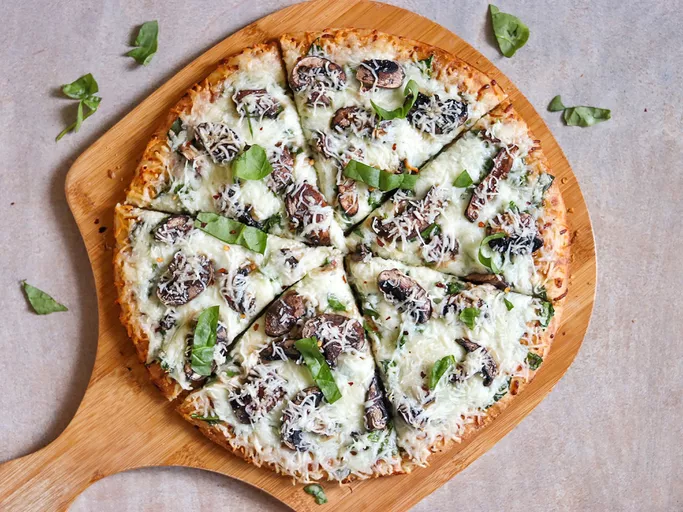

Allie's Mushroom Pizza

Description
A simple mushroom pizza recipe with spinach and mozzarella.
Ingredients
- 1 (12 inch) pre-baked pizza crust
- 3 tablespoons olive oil
- 1 teaspoon sesame oil or to taste
- 1 cup fresh spinach, rinsed and dried
- 8 ounces shredded mozzarella cheese
- 1 cup sliced fresh mushrooms
Directions
- Preheat the oven to 350 degrees F (175 degrees C). Place pizza crust on a baking sheet.
- In a small bowl, mix together olive oil and sesame oil. Brush onto pre-baked pizza crust, covering the entire surface. Stack spinach leaves, then cut lengthwise into 1/2-inch strips; scatter evenly over crust. Cover pizza with shredded mozzarella, and top with sliced mushrooms.
- Bake in the preheated oven for 8 to 10 minutes, or until cheese is melted and edges are crisp.
Back to Homepage